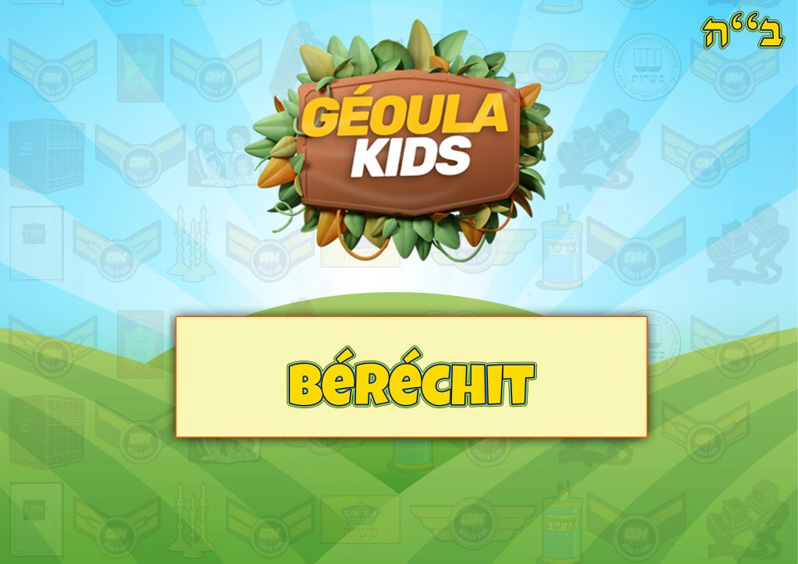
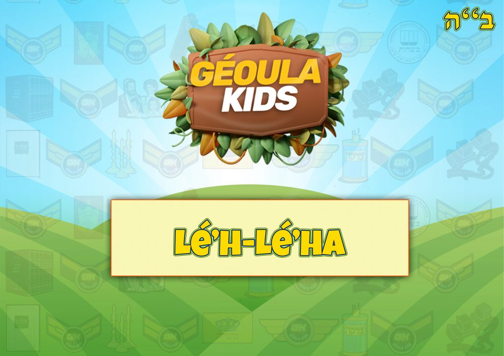
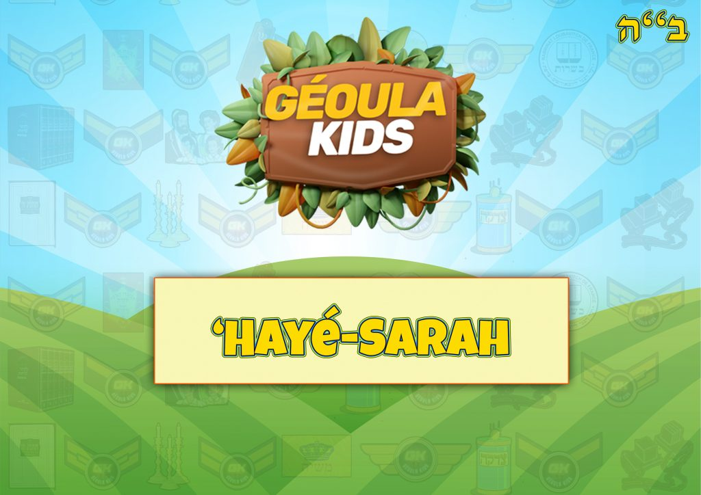
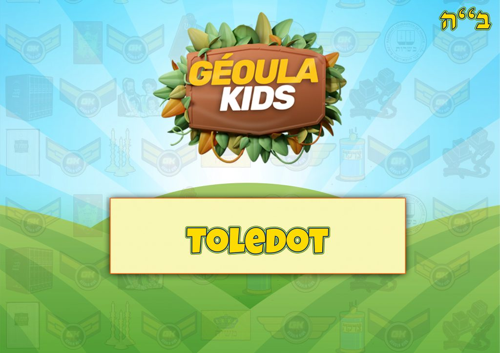
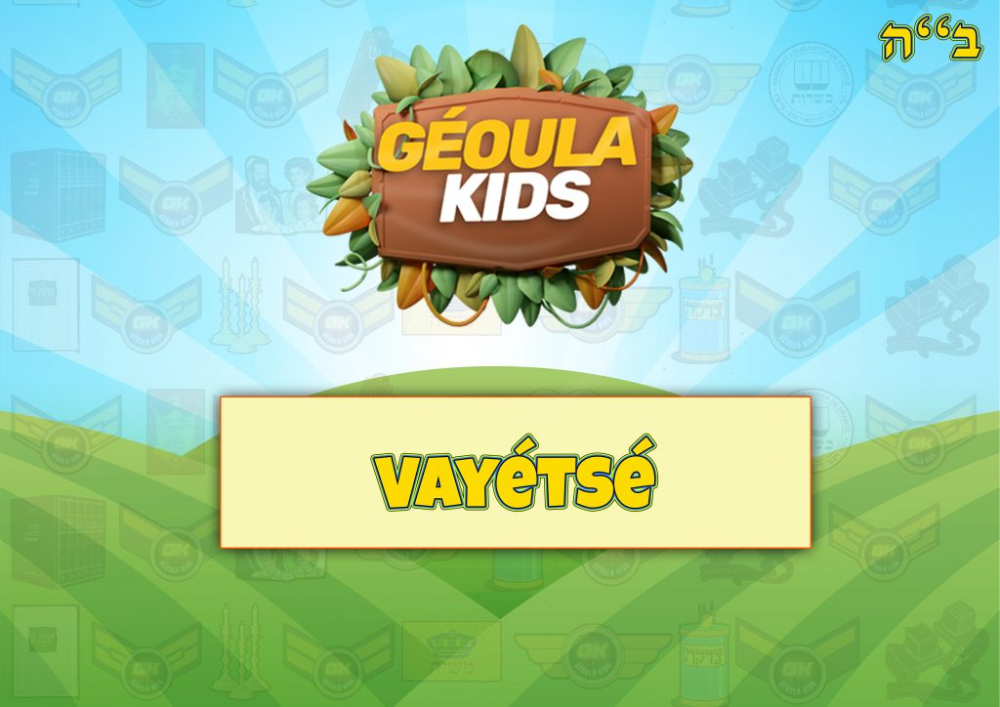
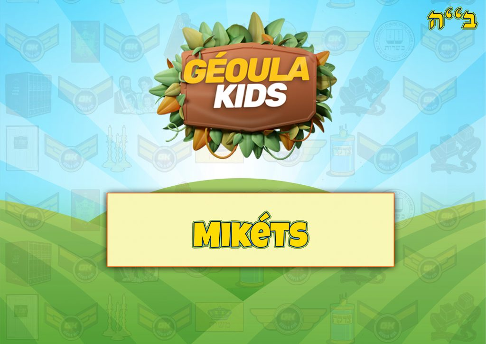
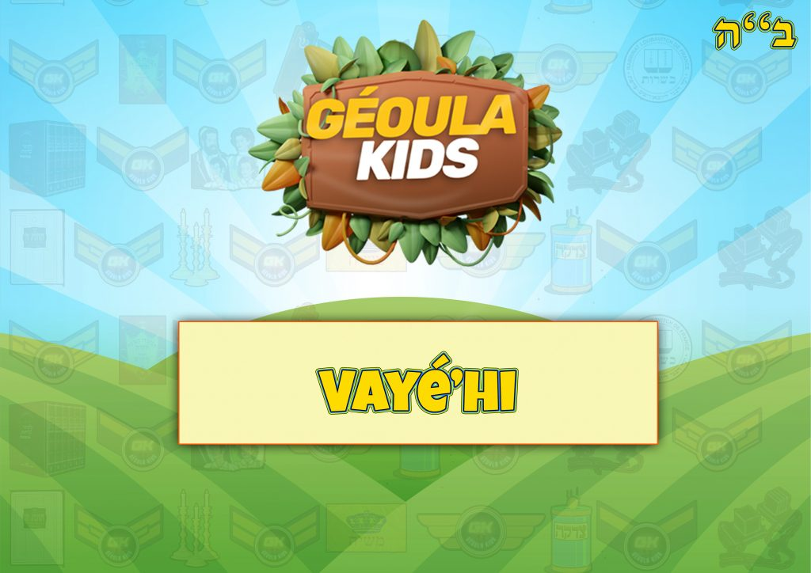

Accueil
Missions Géoulatik
Tirages passés
Tirages à venir
Jeux par Séfér
Béréchit
Chémot
Vayikra
Bamidbar
Dévarim
Feuillets Hébdomadaires
Béréchit
Chémot
Vayikra
Bamidbar
Dévarim
Les Histoires de Moré Yoni
Le Baal Chem Tov
Le Maguid de Mézéritch
Le Noam Élimélé'h
Rabbi Zoucha de Anipoly
Rabbi Yaacov Yosséf
Activités
Fêtes
Learn & Kiff
Mon compte
La Paracha de Béréchit

La Paracha de Noa'h
La Paracha de Lé'h-Lé'ha

La Paracha de Vayéra
La Paracha de 'Hayé-Sarah

La Paracha de Toledot

La Paracha de Vayétsé

La Paracha de Vayichla'h
La Paracha de Vayéchév
La Paracha de Mikéts

La Paracha de Vayigash
La Paracha de Vayé'hi
